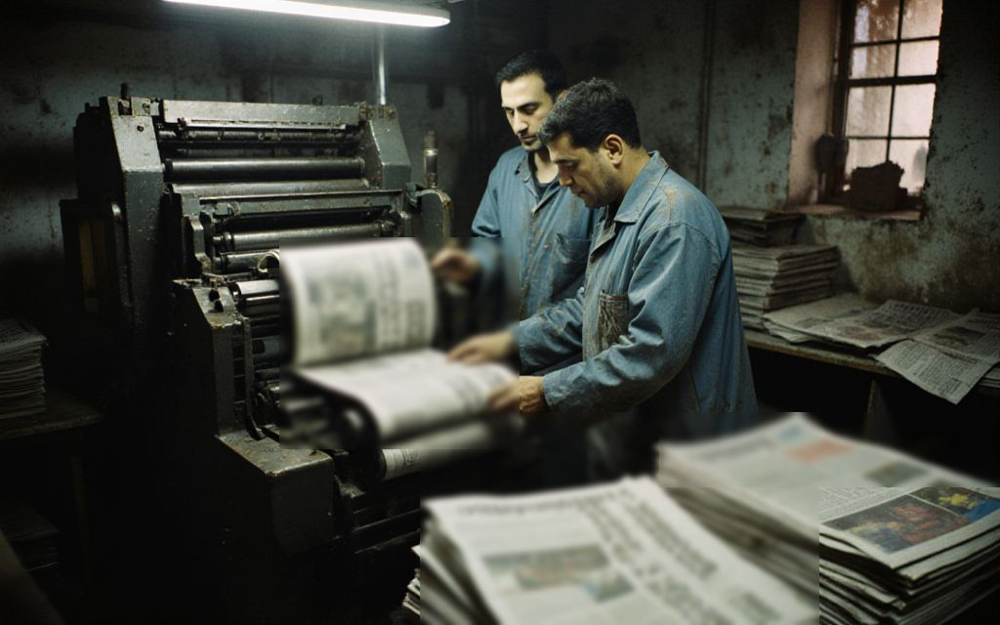

About the Irad Times

The Irad Times (Irad Ubaktysy) is an independent weekly newspaper published in English in Talas every Thursday. It has 24 pages, costs 5 som, and sold about 9,000 copies a week in 2023, in Talas, Nurzhan and Iyık Janyl and by post to readers abroad. It is the paper that reads the documents: budgets, licences, auction protocols, court files and the registers of companies.
1996: a paper made by people who used to make television
The Times was founded in April 1996 by a group of reporters who left IradOne after its coverage of that year’s campaign for Governor. Its first editor was Dinara Sydykova. The first issue, of twelve pages, came out on 11 April 1996 from two rooms on the second floor of the old republican printing house on Printers’ Lane, where the paper still is. In 1997 it bought a second-hand offset press, which stands in the yard and has printed every issue since.
2006–2007: the auctions and the drafts
In December 2006 and January 2007 the Times published the cabinet papers behind the auctions of the Democratic Republic of Irad: oil blocks sold at a third of their value, grain elevators and spectrum sold to companies registered abroad weeks before. On 25 February 2007 Erlan Toktarov read from the partition drafts in Nurzhan. The next morning the Times published a special edition with the complete texts, The Drafts: Framework Treaty and Protocols. It was reprinted three times that week and pasted on walls across Talas. That spring, from more than one platform, the Times was called “the paper that would not be sold”.
The special edition is part of the founding story of the Special Economic Zone. It is also why the Times is still here. The paper has been suspended, once, for nine weeks in 2013. It has never been closed.
Who owns us
Since 2001 the Times has been owned by the people who make it, through the Times Staff Trust. Bolotbek Daniyarov, managing editor since 2001, is one of its eleven trustees. The paper carries almost no state advertising, by the state’s choice. It lives on its readers: subscriptions at home, and subscriptions in dollars from Iradis in Chicago, Toronto, Almaty and elsewhere.
Why this website is hosted in America
Since 2008, after the Department of Public Information took the power to license publishers and printers, our website has been hosted in the United States. The domain and the server are held by Friends of the Irad Times, a nonprofit association set up in Chicago by readers in the diaspora. No authority in Irad can take the site down. It can only be blocked inside Irad, and from time to time it is (see If we are blocked). The print edition has never stopped, except during the 2013 suspension.
What we will not do
We do not publish anonymous accusations without documents, we put every serious allegation to the person concerned before we print it, and we print their answer. We correct our mistakes on page 2 and on our corrections page. We do not take money from political parties, from the government or from the people we write about.